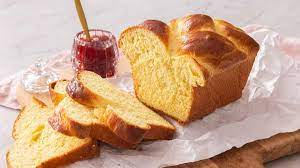

The Different Techniques of Baking:
There are many different ways of baking breads for example: laminating the dough to make croissants.

Laminating the dough is pretty difficult. You have to make sure the butter is at a perfect temperature so that when folding the butter with the dough, it will not shatter.
If the butter is too cold, the butter will break into pieces, which you do not want when laminating dough. If the butter is too warm, it will melt into the dough and instead you will be making a brioche dough.
